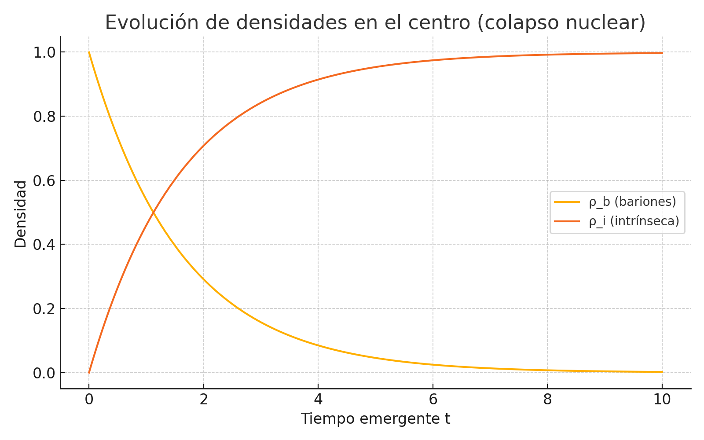
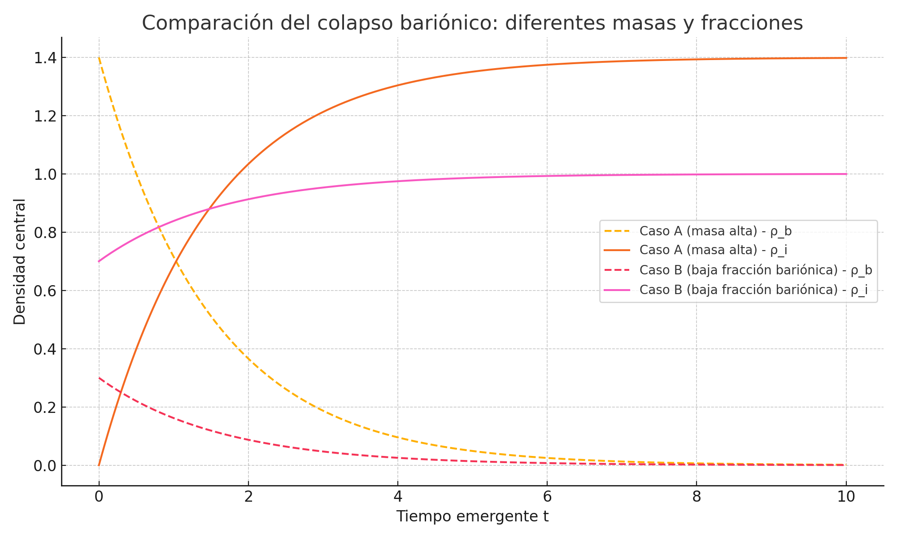
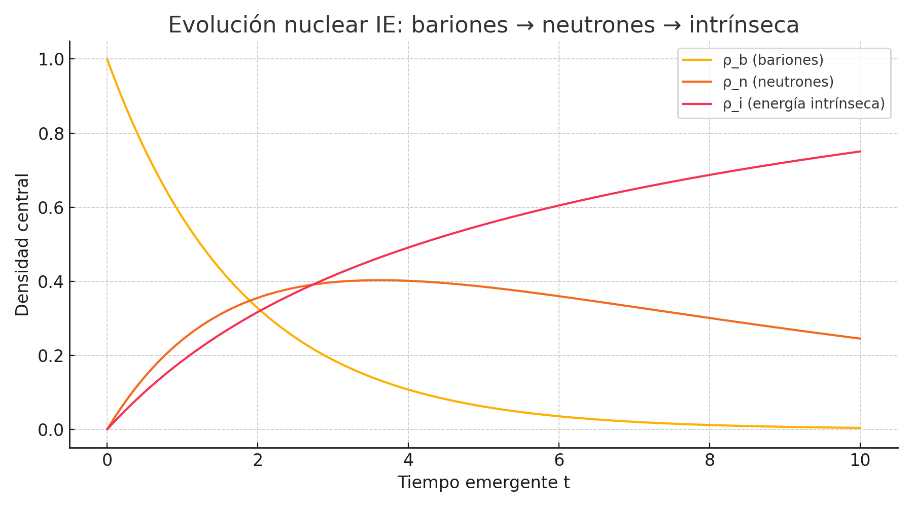

En este bloque se modela
el colapso de una estrella bariónica utilizando una aproximación IE que
incorpora una transición gradual de la densidad bariónica (ρ_b) hacia energía
intrínseca (ρ_i), imitando procesos nucleares como la formación de neutrones o fases
cuánticas de materia densa. Se seleccionó un caso representativo con masa ~20
M☉ y una fracción bariónica inicial del 100 %, concentrada en un núcleo
compacto. Este tipo de configuración permite estudiar si el Modelo IE puede
evitar la formación de singularidades en colapsos realistas, mediante una
redistribución energética estabilizadora.
Se plantea una ecuación
de transferencia interna entre ρ_b y ρ_i basada en un umbral crítico de densidad total ρ_c. El sistema se rige
por las siguientes ecuaciones:
• ρ_total(t) = ρ_b(t) + ρ_i(t)
• \( \dot{\rho}_b = -\lambda(\rho_{\text{tot}}) \cdot \rho_b
\),
\( \dot{\rho}_i
= +\lambda(\rho_{\text{tot}})
\cdot \rho_b \)
• \( \lambda(\rho) = \lambda_{\text{max}} \cdot
\frac{(\rho / \rho_c)^2}{1 + (\rho / \rho_c)^2} \)
Este término de
conversión nuclear se activa progresivamente conforme se alcanza el umbral ρ_c, modelando así un
proceso de transición energética más realista que una conversión instantánea.
La simulación evoluciona las densidades en el tiempo para ver si emerge una
fase estable sin colapso divergente.

Figura 18.1: Evolución de
las densidades bariónica e intrínseca en el centro del remanente.
La simulación demuestra
que el Modelo IE permite una transición energética continua desde materia
bariónica hacia un estado intrínseco cuántico. Esta transformación se produce
sin divergencias, lo que evita la formación de una singularidad clásica. El núcleo
se estabiliza energéticamente, lo que apoya la idea de que el colapso bariónico
puede ser resuelto por una redistribución interna de energía en lugar de un
colapso geométrico absoluto.
Tras la simulación
inicial de colapso bariónico puro, se realizaron dos estudios complementarios
para explorar el comportamiento del Modelo IE ante diferentes configuraciones
físicas:
• Caso A: un remanente más masivo con un núcleo bariónico más extendido.
• Caso B: un núcleo con fracción bariónica baja y componente intrínseca
preexistente.
El objetivo fue determinar cómo estos parámetros influyen en la transición
energética, la estabilidad del remanente y la posible evitación de la
singularidad.
La figura siguiente
muestra la evolución temporal de las densidades centrales para los tres casos
simulados. Se observa que:
• En el caso más masivo (A), la transición bariónica es más lenta pero estable,
lo que sugiere un núcleo más profundo antes de estabilizar.
• En el caso de baja fracción bariónica (B), la energía intrínseca toma
rápidamente el control y estabiliza el colapso sin necesidad de una transición
intensa.
• El caso base ofrece un equilibrio entre ambas dinámicas, actuando como
referencia típica para colapsos estelares.

Figura 18.2: Evolución
comparada de ρ_b y ρ_i
en el centro del remanente para tres escenarios diferentes.
Estas simulaciones
refuerzan la hipótesis de que el Modelo IE puede absorber de forma continua la
materia colapsante en forma de energía intrínseca,
sin formación de singularidades. El comportamiento del sistema se ve claramente
influenciado por la masa total y la proporción de bariones iniciales, lo que
podría reflejarse en la estructura interna observable de objetos compactos
reales.
Este bloque explora un
paso más detallado en la física del colapso estelar bajo el Modelo IE: la
posibilidad de que parte de la materia bariónica se transforme inicialmente en
neutrones antes de formar energía intrínseca. Esta dinámica refleja con mayor realismo
la evolución interna de objetos compactos como las estrellas de neutrones,
incorporando una fase degenerada intermedia previa a la estabilización
cuántica.
Se modelan tres
componentes acopladas:
• \( \rho_b(t) \): materia bariónica libre
• \( \rho_n(t) \): neutrones degenerados
• \( \rho_i(t) \): energía intrínseca estabilizadora
Las tasas de conversión están definidas por:
\[\begin{aligned}\dot{\rho}_b &=
-\lambda_1(\rho_{\text{tot}})
\cdot \rho_b \\\dot{\rho}_n &= +f_n \cdot \lambda_1(\rho_{\text{tot}}) \cdot \rho_b
- \lambda_2(\rho_{\text{tot}})
\cdot \rho_n \\\dot{\rho}_i &= +(1 - f_n) \cdot \lambda_1(\rho_{\text{tot}}) \cdot \rho_b
+ \lambda_2(\rho_{\text{tot}})
\cdot \rho_n\end{aligned}\]
Donde:
• \( f_n \) es la fracción que se convierte primero
en neutrones (aquí 0.6).
• \( \lambda_1 \) y \( \lambda_2 \) son funciones que dependen del total
energético, activándose cuando \( \rho_{\text{tot}} \) supera un umbral \( \rho_c
\).

Figura 18.3: Evolución de
las tres fases de colapso nuclear en el centro del remanente.
La simulación revela que
el Modelo IE permite una evolución interna coherente con la física nuclear
observada:
1. Una fase inicial donde la materia colapsa como bariones.
2. Una fase intermedia donde se acumula una región de neutrones densos,
emulando un núcleo degenerado de estrella de neutrones.
3. Una fase final en la que los neutrones se transforman en energía intrínseca,
estabilizando el sistema sin necesidad de una singularidad.
Esto abre la posibilidad de interpretar los remanentes IE como una evolución
natural más allá de las estrellas de neutrones, integrando materia, gravedad y
energía cuántica en un marco sin divergencias ni horizontes estrictos.